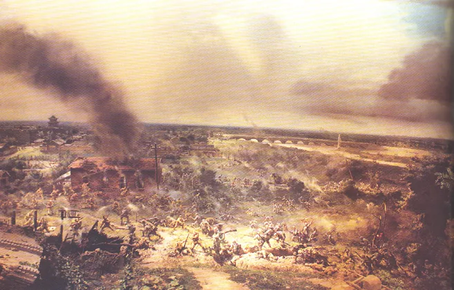
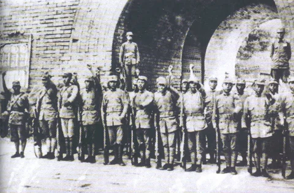
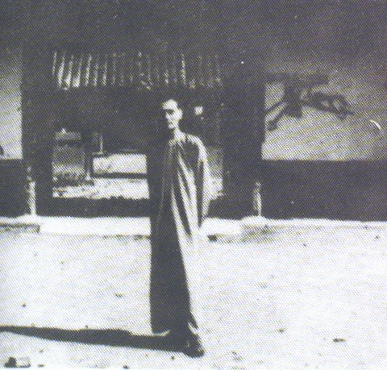

七七事变
1937 年 7 月 7 日夜，日军在卢沟桥附近演习，借口一名士兵"失踪"，要求进入宛平县城搜查， 遭中国守军拒绝后，悍然炮攻宛平城和卢沟桥，挑起卢沟桥事变。 在中国共产党抗日民族统一战线政策的影响下，当地中国驻军第 29 军奋起抗战。 第 29 军副军长佟麟阁和第 29 军第 132 师师长赵登禹先后壮烈殉国。

01 · 背景起因 Background
步步蚕食。日本侵占东北之后并未停止侵略步伐，而是步步蚕食华北， 制造华北事变，企图把华北变成第二个"满洲国"，将侵略势力进一步向南推进。
民族危机空前严重。华北危急、平津危急，中华民族到了最危险的时刻。 全国各界要求停止内战、一致抗日的呼声日益高涨，抗日救亡运动不断走向高潮。
02 · 事件经过 Course of Events
03 · 主要人物 Figures
第 29 军军长，驻守平津要道。
先被枪击落马下，带伤继续指挥突围，后再次中弹身亡，壮烈殉国。
第 29 军第 132 师师长，壮烈殉国。
率部反击，一举夺回失去阵地，全歼侵占卢沟桥火车站的日军。
发表庐山抗战宣言，表明抗战决心，提出"无论何人皆有抗战守土之责任"。
04 · 历史图片与史料 Archive


史料文献 · 庐山谈话 · "应战，不求战"
05 · 关键名词解释 Glossary
| 名词 | 解释 |
|---|---|
| 卢沟桥事变 | 即七七事变。1937 年 7 月 7 日夜，日军在卢沟桥附近借故挑衅，炮攻宛平城与卢沟桥，中国守军奋起抵抗，标志着中国全民族抗战的开端。 |
| 宛平城 | 位于北平西南卢沟桥东侧的一座城池。1937 年 7 月 7 日夜成为日军炮击的目标，是中国守军坚守的阵地。 |
| 第 29 军 | 驻守平津一带的中国军队。七七事变中奋起抵抗日军进攻，副军长佟麟阁、第 132 师师长赵登禹壮烈殉国。 |
| 华北事变 | 1935 年前后日本在华北制造的一系列侵略事件，企图把华北变成第二个"满洲国"，是七七事变的重要前因。 |
| 《为日军进攻卢沟桥通电》 | 1937 年 7 月 8 日中国共产党发表的通电，号召全民族抗战，是中共在事变后迅速作出的反应。 |
| 《中共中央为公布国共合作宣言》 | 1937 年 7 月 15 日中共代表团在庐山向蒋介石提交的文件，为国共合作抗日的重要步骤。 |
| 庐山谈话 | 1937 年 7 月 17 日蒋介石在庐山发表的谈话，表明抗战决心，宣告"应战，不求战"。 |
| 抗日民族统一战线 | 以国共合作为基础，团结全国各阶层、各党派、各军队共同抗日的统一战线。七七事变后正式形成，是全民族抗战的政治基础。 |
| 全民族抗战 | 与九一八事变后的局部抗战相对，指 1937 年七七事变后全国各阶层、各党派共同投入的抗日战争。 |
| 世界反法西斯战争在东方的爆发点 | 对七七事变历史地位的表述之一，指出它标志着世界反法西斯战争在东方全面爆发。 |
06 · 意义与价值 Significance
七七事变是中国全民族抗战的开端，也是中华民族由衰败到振兴的转折点。
是日本帝国主义发动全面侵华战争的起点，又是中国全国性抗日战争的标志性事件。
促进了全民族觉醒，中华民族从"睡狮"状态真正觉醒，形成前所未有的民族凝聚力。
以国共合作为基础的抗日民族统一战线正式形成，是"世界反法西斯战争在东方的爆发点"。